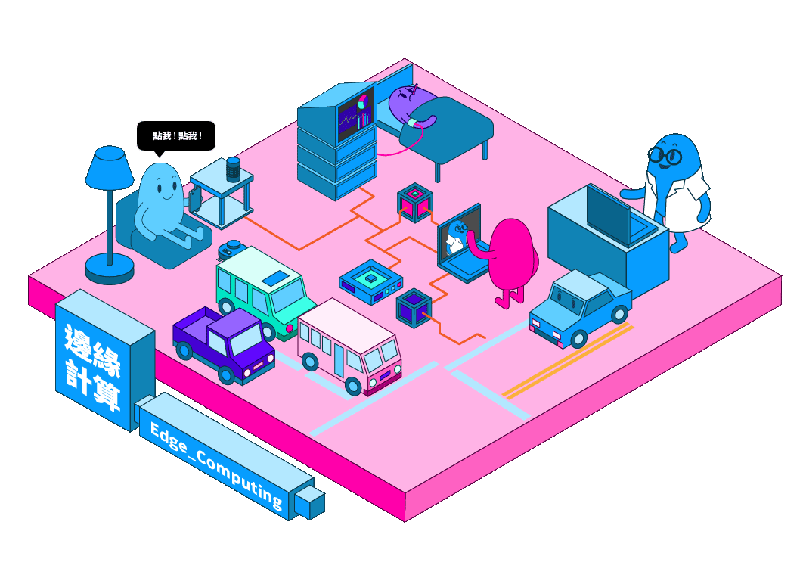

恭喜您完成邊緣計算的探索

恭喜您完成邊緣計算領域
已經完成第 5 / 6 區
您可以選擇繼續完成其他
或前往填寫詳細資料
※ 點選圖片中的場景，會有意想不到的效果哦
邊緣計算是一種分散式運算的架構，將應用程式、數據資料與服務的運算，由網路中心節點，移往網路邏輯上的邊緣節點來處理。邊緣運算將原本完全由中心節點處理大型服務加以分解，切割成更小與更容易管理的部份，分散到邊緣節點去處理。邊緣節點更接近於使用者終端裝置，可以加快資料的處理與傳送速度，減少延遲。在這種架構下，資料的分析與知識的產生，更接近於數據資料的來源，因此更適合處理巨量資料。網路邊緣的線上設備數量迅速增加，這些設備產生大量數據資料(例如智慧工廠或城市的IoT設備)，也消耗大量資料頻寬(例如使用5G手機查看 4K 影像或VR 遊戲裝置)，或兩者同時使用(如自動駕駛車輛)。
※ 本轉載之影片內容均用於非商業用途。純粹為教育、非營利等合法目的，而影片之之著作權、所有權與智慧財產權，包括內容、文字、圖片、聲音、影像等均為DIGITIMES影音所有。